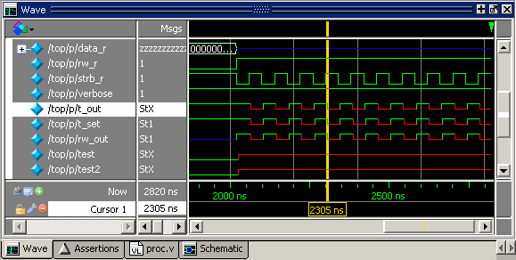
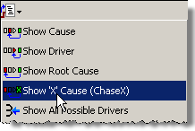

You can use the
Causality Traceback feature of the Schematic window to trace an
unknown state (StX) back to its source.
Unknown values are indicated by red
lines in the Wave window (Figure 1) and in the Wave Viewer pane of the
Schematic window.
Figure 1. Unknown States Shown as Red
Lines in Wave Window
Procedure
- Optimize your design with
+acc (for debugging visibility) and with -debugdb (to save combinatorial
and sequential logic events to the working library).
- Load your design with vsim
-debugdb to create a database (vsim.dbg) from the combinatorial
and sequential logic event data.
- Log all signals in the design
or any signals that may possibly contribute to the unknown value
(log -r /* will
log all signals in the design).
- Add signals to the Wave window
or wave viewer pane, and run your design the desired length of time.
- Put a Wave window cursor on
the time at which the signal value is unknown (StX). In Figure 1, Cursor 1 at time 2305 shows an unknown
state on signal t_out.
- Add the
signal of interest to the Schematic window. You can drag and drop
it from the Objects window, use the Add Selected to Window toolbar button,
or the menu
selection,
- In the Schematic window, make
sure the signal of interest is selected.
- Click and hold the Event Traceback
menu button to open the menu (Figure 2), then select Show
‘X’ Cause (ChaseX).
Figure 2. Event Traceback Menu